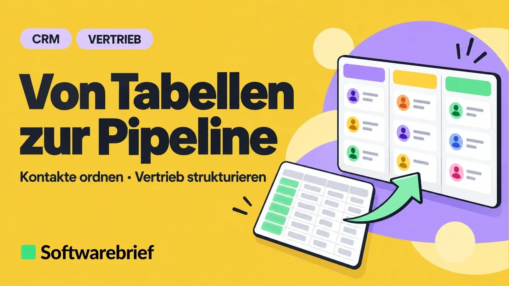
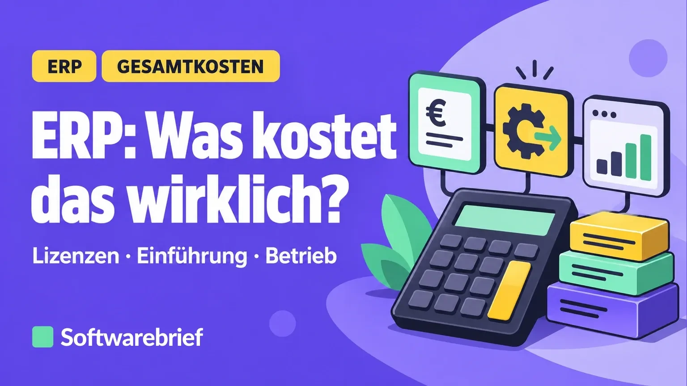

Elektronische Rechnungen: Was Ihre Software können sollte


Lohnsoftware richtig kalkulieren


Baulohn und Sonderfälle vor der Auswahl prüfen


Personalsoftware einführen, ohne Prozesse zu verlieren


Zeiterfassung und Schichtplanung getrennt bewerten


CRM Kosten verstehen: Nutzer, Kontakte und Funktionen



Vom Tabellenvertrieb zu einer klaren Pipeline


ERP für Handel oder Dienstleistung: Der Unterschied zählt


